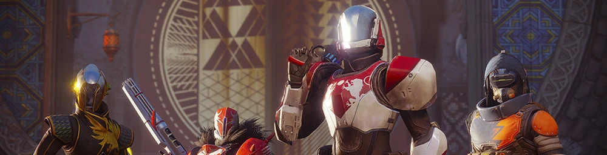

Durante la misión de introducción, se te enseñará una serie de tipos de arma y de enemigos del juego, así como diferentes poderes de guardián.
Las armas cinéticas suelen ser las principales. Infligen daño directo a los objetivos sin escudo, pero son menos efectivas contra adversarios protegidos.
Las armas energéticas infligen daño elemental, lo que permite atravesar los escudos enemigos de manera mucho más efectiva que las armas cinéticas. Consigues una bonificación de daño si rompes el escudo elemental enemigo con el elemento correspondiente al color con el que está marcado: Solar para escudos naranjas, arco para escudos azules y vacío para escudos morados. Las armas energéticas son ligeramente más débiles contra enemigos sin escudo que las armas cinéticas.
Granadas

Las granadas son potentes explosivos con una amplia variedad de efectos. Existen desde simples explosivos sin más hasta granadas adhesivas que se pegan a sus víctimas, o incluso artefactos para impedir el paso y que barren la zona de detonación con daño constante durante un breve período de tiempo. ¡Asegúrate de no salir herido por estar demasiado cerca de una granada!
Al pulsar el botón de granada (el botón superior izquierdo, L1 o el botón lateral equivalente por defecto en mandos; en teclados, la tecla por defecto es "Q"), lanzarás una granada si la energía de granada está llena. Algunas subclases pueden mantener pulsado el botón de granada para activar otros efectos, como "cocinar" la granada para tener potencia adicional, o consumir su energía para recuperar salud.
Cuerpo a cuerpo
Los guardianes pueden combatir de cerca con ataques cuerpo a cuerpo estándar (al pulsar R1, el botón superior derecho o su equivalente por defecto en mandos, en teclados, la tecla por defecto es "C"). Cuando la energía de cuerpo a cuerpo está llena, se activa una mejora de la habilidad. Los ataques cuerpo a cuerpo con la energía llena tienen un mayor alcance e infligen más daño que los estándar, junto con efectos extra como la regeneración de escudo, de salud o de energía de habilidad.
Ultimate (Super)
Las súper son las habilidades más poderosas del arsenal de los guardianes. El modo en que se exprese una súper depende de la subclase de guardián elegida, pero el resultado final siempre es un ataque devastador (o un estado temporal) capaz de acabar con varios oponentes menores a la vez o de dañar enormemente a un jefe. Derrotar enemigos con una súper genera orbes de Poder que la escuadra puede ir recogiendo y así recuperar energía de súper más rápido. Los equipos organizados utilizan sus súper de manera estratégica para que todos puedan conseguirla con más frecuencia, lo que los hace más letales.
Estas habilidades varian de acuerdo a el tipo de personaje que eres y el elemento que escojas.
Ir a "Clases"
Quieres volver a la pagina principal ?